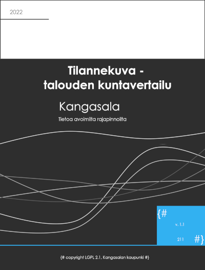

Talouden kuntavertailu 2023
0.1
1 Talous
}} {{< var general.year >}}" class="quarto-cover-image img-fluid">
Kirjanpitovelvollisuuteen, kirjanpitoon ja tilinpäätökseen sovelletaan kuntalain lisäksi kirjanpitolakia. Tilinpäätökseen kuuluu tase, tuloslaskelma, rahoituslaskelma ja liitetiedot sekä talousarvion toteutumisvertailu ja toimintakertomus. Lisäksi kunnan tytäryhteisöjen kanssa muodostettavan kuntakonsernin konsernitilinpäätös on sisällytettävä tilinpäätökseen.
Tilikausi on kalenterivuosi. Hallituksen on laadittava tilinpäätös tilikautta seuraavan vuoden maaliskuun loppuun menessä. Valtuuston on käsiteltävä tilinpäätös kesäkuun loppuun mennessä. Kunnat raportoivat vuodesta 2021 alkaen Valtiokonttorille neljännesvuosittain kuluvan vuoden talouden toteumatietoja.
(Lähde: Kuntaliitto 2023)
Kuntavertailuun on kerätty kuntakohtaisia verrokkikuntia talouden lukujen osalta. Tarkastelu on tehty euroina sekä asukaslukuun suhteutettuna. Asukasluku on yhtenevä talouden raportointijakson kanssa.
Tässä raportissa käytetty väkiluku (€/asukas) on Tilastokeskuksen väestön ennakkorakennetieto 2023M06
2 Tilikauden yli -alijäämä
Kertynyt yli-/alijäämäkoostuu kuluneen tilikauden sekä edellisten tilikausien yli-/alijäämistä. Kertynyt ylijäämä lisää kuntatalouden liikkumavaraa.
3 Toimintakate
Kunnan tuloslaskelman välituloksena esitettävä toimintakate ilmoittaa, paljonko käyttötalouden kuluista jää katettavaksi verotuloilla ja valtionosuuksilla. Kuntayhtymässä toimintakate ilmoittaa kuntayhtymän korko- ja muihin rahoituskuluihin sekä poistojen ja arvonalennusten kattamiseen käytettävissä olevan käyttötalouden tulorahoituksen määrän. (Lähde: Tutkihallintoa.fi 2023)
3.1 Toimintakate - €/asukas
4 Toimintakulut
Avustukset
Avustukset sisältävät kotitalouksille maksetut tuet ja avustukset samoin kuin yhteisöille myönnetyt tuet ja avustukset. Kotitalouksille myönnettyjä avustuksia ovat mm. toimeentulotuki ja omaishoidon tuki. Yhteisöille myönnettyjä avustuksia ovat mm. yhdistyksille, seuroille ja tiehoitokunnille maksettavat toiminta-avustukset.
Aineet, tarvikkeet, tavarat
Aineisiin, tarvikkeisiin ja tavaroihin luetaan mm. toimisto- ja koulutarvikkeet, kirjallisuus, lääkkeet ja hoitotarvikkeet sekä sähkön hankintamenot.
Henkilöstömenot
Henkilöstömenot sisältävät ennakonpidätyksen alaiset palkat ja palkkiot ja niihin verrattavat kulut sekä välittömästi palkan, palkkion tms. perusteella määräytyvät kulut, kuten eläkekulut, sosiaaliturvamaksut ja lakisääteiset ja vapaaehtoiset henkilövakuutusmaksut.
Muut toimintamenot
Muihin toimintamenoihin sisältyvät mm. vuokrakulut, vahingonkorvaukset ja kunnan maksamat välittömät verot.
Palvelujen ostot
Palvelujen ostot pitää sisällään sekä suoraan asiakkaalle eli kuntalaisille ostetut palvelut, että palvelut, joita kunta käyttää omassa palvelutuotannossaan. Asiakaspalvelut ovat kuntalaisille tarkoitettuja lopputuotepalveluja, joita kunta ostaa muilta palvelujen tuottajilta. Muut kuin asiakaspalvelumaksut ovat kunnan suoritetuotannossa käyttämiä palveluja mm. toimisto- ja asiantuntijapalvelut, ICT-palvelut sekä puhtaanapito- ja pesulapalvelut.(Lähde: Tutkihallintoa.fi 2023)
4.1 Toimintakulut - €/asukas
4.2 Toimintakulut %-osuus toimintakuluista
5 Henkilöstökulut
Henkilöstömenot
Henkilöstömenot sisältävät ennakonpidätyksen alaiset palkat ja palkkiot ja niihin verrattavat kulut sekä välittömästi palkan, palkkion tms. perusteella määräytyvät kulut, kuten eläkekulut, sosiaaliturvamaksut ja lakisääteiset ja vapaaehtoiset henkilövakuutusmaksut.
5.1 Henkilöstökulut - €/asukas
6 Palvelujen ostot
Palvelujen ostot pitää sisällään sekä suoraan asiakkaalle eli kuntalaisille ostetut palvelut, että palvelut, joita kunta käyttää omassa palvelutuotannossaan. Asiakaspalvelut ovat kuntalaisille tarkoitettuja lopputuotepalveluja, joita kunta ostaa muilta palvelujen tuottajilta. Muut kuin asiakaspalvelumaksut ovat kunnan suoritetuotannossa käyttämiä palveluja mm. toimisto- ja asiantuntijapalvelut, ICT-palvelut sekä puhtaanapito- ja pesulapalvelut.(Lähde: Tutkihallintoa.fi 2023)
6.1 Palvelujen ostot - €/asukas
7 Toimintatulot
Tuet ja avustukset
Tuet, avustukset ja muut tulonsiirrot valtiolta, Euroopan unionilta tai muulta yhteisöltä merkitään tuloslaskelmaan omaksi ryhmäkseen silloin, kun tuki tai avustus ei ole kunnan suoritteidensa perusteella saama korvaus eikä investoinnin rahoitusosuus. Tällaisia korvauksia ovat mm. valtionavustus perustoimeentulotukeen, palkkatuki sekä EU-tuki kunnan omaan käyttötalouden kehittämisprojektiin.
Maksutulot
Maksutuloja ovat asiakasmaksut ja muut maksut niistä tavaroista ja palveluista, joiden hinnoittelun tarkoituksena ei ole kattaa tuotantokustannuksia kokonaisuudessaan tai joiden hinnat määritellään asiakkaan maksukyvyn mukaan. Usein maksujen perusteista säädetään laissa tai asetuksessa.
Muut toimintatulot
Muihin toimintatuloihin sisältyvät muut kuin edellä mainitut säännöllisesti kertyvät toimintatulot. Tällaisia ovat mm. vuokratulot sekä pysäköintivirhemaksut.
Myyntitulot
Myyntituloja ovat tulot tavaroista ja palveluksista, jotka on tarkoitettu myytäväksi pääsääntöisesti tuotantokustannukset peittävään hintaan.(Lähde: Tutkihallintoa.fi 2023)
7.1 Toimintatulot - €/asukas
8 Verotulot
Kunnan verotulot muodostuvat kunnallisverosta, yhteisöveron osuudesta ja kiinteistöverosta. Kunta päättää itsenäisesti tuloveroprosentistaan ja lain säätämissä rajoissa kiinteistöveron määrästä. Valtio päättää yhteisöveroprosentin ja tulouttaa osan yhteisöverosta kunnille.(Lähde: Tutkihallintoa.fi 2023)
8.1 Verotulot - €/asukas
9 Valtionosuudet
Valtionosuus on valtion kunnille lain perusteella maksama osuus kuntien tiettyjen palvelujen laskennallisista kustannuksista.(Lähde: Tutkihallintoa.fi 2023)
9.1 Valtionosuudet - €/asukas
10 Lainakanta
Lainakannalla tarkoitetaan pitkä- ja lyhytaikaista korollista vierasta pääomaa. Se lasketaan vähentämällä koko vieraasta pääomasta saadut ennakot sekä osto-, siirto- ja muut velat.(Lähde: Tutkihallintoa.fi 2023)
10.1 Lainakanta - €/asukas
Kuntaliitto. 2023. Kirjanpito ja tilinpäätös. Kuntaliitto. https://www.kuntaliitto.fi/talous/kirjanpito-ja-tilinpaatos.
Tutkihallintoa.fi. 2023. Kuntatalouden ABC. Tutkihallintoa.fi. https://www.tutkihallintoa.fi/kuntatalouden-abc/.